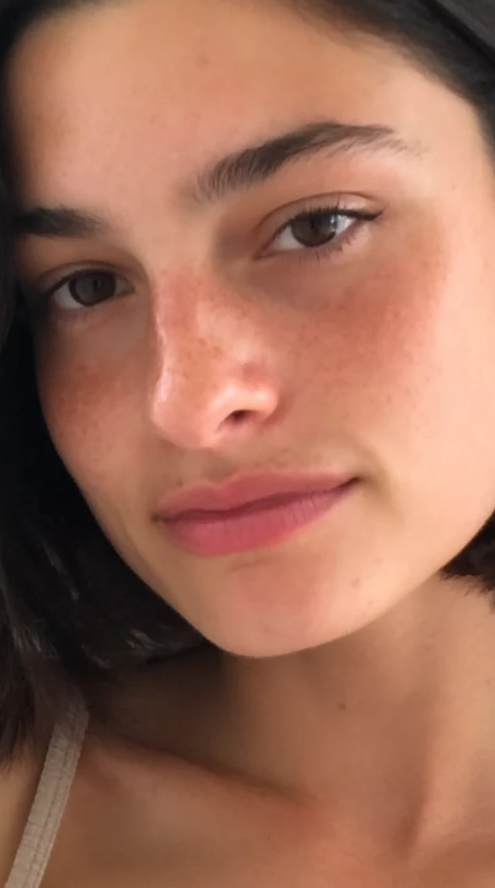
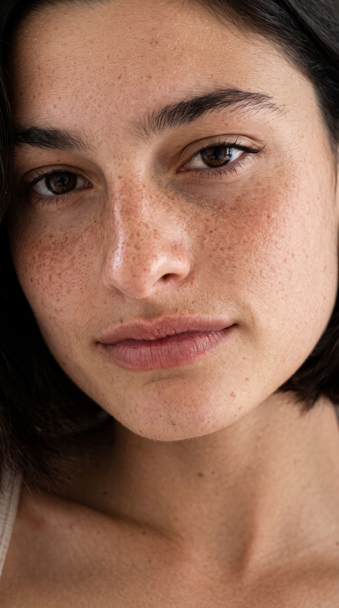

пример: исходный кадр

пример: после увеличения

качество и разрешение
Topaz
Topaz берём, когда готовый кадр нужно сделать крупнее и чётче — для карточки маркетплейса или печати.
Перестараться легко: резкость становится «пересвеченной», а кожа и фактуры выглядят как ретушь нейросети.
Увеличивайте умеренно и сравнивайте с исходником на 100%: должны быть видны детали, а не обработка.